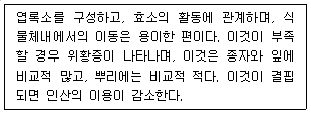
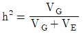
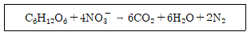

임업종묘기사 (2010-07-25 기출문제)
1과목: 조림학
1. 택벌작업의 특성을 설명한 내용으로 틀린 것은?
- 심미적 가치가 가장 높다.
- 음수수종의 갱신에 적합하다.
- 일시의 벌채량이 많으므로 경제상 효율적이다.
- 소면적임지에 보속생산을 하는데 가장 적합한 방법이다.
(정답률: 알수없음)

2. 암석이 토양을 구성하는 작은 입자로 분해된 후에 하천의 물에 의해 운반되어 다른 곳으로 옮겨 쌓여서 형성된 토양은?
- 잔적토
- 붕적토
- 마사토
- 충적토
(정답률: 알수없음)
3. 잣나무의 가지치기에서 강도(强度)가 강했을 때 가지치기 효과라고 할 수 없는 것은?
- 무절재의 생산
- 수간의 완만도 향상
- 수고의 성장량 증가
- 목하의 수광량 증가
(정답률: 알수없음)
4. 수꽃의 화아원기 형성시기가 가장 빠른 수종은?
- 참나무류
- 삼나무류
- 소나무류
- 가문비나무류
(정답률: 알수없음)
5. 지위가 중(中)인 일반 활엽수림의 간벌개시 연령으로 바른 것은?
- 10~20년
- 20~30년
- 30~40년
- 40~50년
(정답률: 알수없음)
6. 다음 수종 중에서 산성 토양에 상대적으로 잘 적응할 수 있는 수종은?
- 개오동나무
- 오리나무
- 소나무
- 네군도단풍나무
(정답률: 알수없음)
7. 다음 중 삽목을 할 때 주의해야 할 점에 대한 내용으로 틀린 것은?
- 작업 중 삽수가 건조하거나 눈이 상하지 않도록 주의한다.
- 비가 온 후 상면이 습하면 작업을 하지 않는 것이 일반적이다.
- 삽목토양으로는 배수성이 좋은 토양 보다는 양료가 충분히 있는 양토계통의 토야을 이용하는 것이 좋다.
- 삽수의 끝눈은 남향으로 향하게 하고 포플러류 같은 속 성수는 삽수를 수직으로 세우고 기타 수종은 삽수의 상단면이 북향이 되게 하여 30° 정도 경사지게 세운다.
(정답률: 알수없음)
8. 묘목을 1ha에 장방형으로 규칙적인 식재를 하고자 한다 몇 주가 필요한가? (단, 열간거리는 4m, 주간거리는 3m이다.)
- 83주
- 133주
- 833주
- 1033주
(정답률: 알수없음)
9. 다음은 무슨 원소에 대한 설명인가?

- K
- N
- Ca
- Mg
(정답률: 알수없음)
10. 모수의 조건에 대한 설명으로 틀린 것은?
- 우세목 중에서 고른다.
- 유전적 형질이 좋아야 한다.
- 풍도(風倒)에 대한 저항력이 있어야 한다.
- 종자를 적게 생산하는 개체를 남긴다.
(정답률: 알수없음)
11. 제벌에 대해 바르게 설명하고 있는 내용은?
- 중간 수입을 주요 목적으로 하는 벌채작업이다.
- 작업의 효율성을 고려하여 겨울철에 실시하는 것이 원칙이다.
- 윤벌기 내에 가지치기와 병행하여 단 1회만 실시하는 것이 원칙이다.
- 풀베기 작업이 종료된 유령림에서 불량목을 제거하여 임상을 정비하는 작업이다.
(정답률: 알수없음)
12. 환원법에 의한 활력검사에 대한 내용으로 잘못된 것은?
- 테트라졸륨의 반응은 휴면종자에도 잘 나타난다.
- 침엽수의 종자는 배와 배유가 함께 염색되도록 한다.
- 15°C 온도 하에서 약 24시간 동안 정온기 안에 둔다.
- 테트라졸륨 대신 테룰루산칼륨 1 % 액도 사용된다.
(정답률: 알수없음)
13. 다음 수목의 조절작용에 대한 설명으로 틀린 것은?
- 일반적으로 일장(日長)에 대한 감수 부위는 잎이다.
- 일반적으로 정아는 측아보다 그 세력이 더 우세하다.
- 부적당한 환경요인 때문에 휴면이 생기는 것을 자발휴면이라 한다.
- 졸참나무, 상수리나무, 굴참나무 등의 잎은 가을에 갈색으로 되어 죽고 봄이 되어 새눈이 나올 때 낙엽된다.
(정답률: 알수없음)
14. 해송에 대한 기술 중 옳지 않은 것은?
- 수피는 흙갈색이다.
- 동아(冬芽)는 붉은색이다.
- 줄기는 단일절(單一節)이다.
- 해안지역에 따른 평지에 많이 분포한다.
(정답률: 알수없음)
15. 강송을 양묘하려고 채종하였다. 열매를 탈각하여 5kg을 얻었으며 정선하여 얻은 순정종자는 4.5kg이었다. 이 종자의 발아율을 조사하니 80%였다면 이 종자의 효율은 몇 %인가?
- 90
- 80
- 72
- 64
(정답률: 알수없음)
16. 파종 1개월 정도 전에 노천매장하여 발아촉진에 도움이 되는 수종은?
- 소나무
- 잣나무
- 느티나무
- 은행나무
(정답률: 알수없음)
17. 순림에 관한 특징 설명으로 옳은 것은?
- 입지(立地)를 완전하게 이용할 수 있다.
- 경제적으로 가치있는 나무를 대량생산할 수 있다.
- 숲의 구성이 단조로워서 병충해, 풍해의 저항력이 강하다
- 침엽수로만 형성된 순림에서는 임지의 악화가 초래되는 일이 없다.
(정답률: 알수없음)
18. 다음에 제시된 수종들 중에서 일반적으로 파종 1년 후에 판갈이 작업을 실시하는 것이 좋은 수종으로만 짝지은 것은?
- 삼나무, 주목
- 소나무, 잣나무
- 소나무, 낙엽송
- 전나무, 독일가문비나무
(정답률: 알수없음)
19. 화기(花器)의 구조와 종자 및 열매의 구조관계를 바르게 연결한 것은?
- 주심(珠心) - 배
- 배주(胚珠) - 열매
- 주피(珠皮) - 종피
- 씨방(자방) - 종자
(정답률: 알수없음)
20. 산림의 간접 효용이 아닌 것은?
- 홍수나 산사태를 방지한다.
- 이산화탄소를 흡수하고 산소를 방출한다.
- 파티클 보드의 원료로 이용된다.
- 휴양의 기회를 제공한다.
(정답률: 알수없음)
2과목: 임목육종학
21. 일반적으로 임목의 화아분화를 촉진시키는 화학적 처리방법은?
- C/N율을 낮춘다.
- 지베렐린을 처리한다.
- 광선의 수광량을 줄여준다.
- 나무의 생육온도를 낮춘다.
(정답률: 알수없음)
22. 하나의 유전자가 하나 이상의 형질발현에 관여하는 것은?
- 표현형모사(phenocopy)
- 모체효과(maternal effect)
- 백색효과(white effect)
- 유전자의 다면발현(pleiotropy)
(정답률: 알수없음)
23. 도입수종의 조기검정 방법으로 거리가 먼 것은?
- 전기영동법
- 탄소동화작용 측정법
- catalase 효소 측정법
- 유묘-성묘의 상관 이용법
(정답률: 알수없음)
24. Land race를 옳게 설명한 것은?
- 도입품종
- 지역별 고유품종
- 어느 지역의 자생품종
- 어느 지역에 적응된 도입품종
(정답률: 알수없음)
25. 일반조합능력(general combining ability)과 가장 관계가 깊은 것은?
- 일반산지 시험
- 집단차대 검정
- 반형매차대 검정
- 전형매차대 검정
(정답률: 알수없음)
26. 단성잡종(monohybrid)을 양친 중의 열성개체와 검정교배(test cross)한 표현형의 분리비는? (단, 완전우성으로 한다.)
- 3:1
- 2:1
- 1:1
- 3:2:1
(정답률: 알수없음)
27. 채종원(seed orchard)을 인위적으로 만들기보다 자연 채종림을 사용하는 편이 유리할 경우가 있다. 자연채종림을 활용하는 것이 더 편리한 경우와 가장 거리가 먼 것은?
- 본격적인 육종이 요구되지 않는 부차적 수종
- 개체간의 유전변이가 너무 심해 개체선발이 어려울 때
- 임분 내의 변이가 작고 개화・결실까지 긴 시간을 요하는 수종
- 산지간의 변이가 크고 유전적으로 우수한 임분에서 종자 채취가 가능할 때
(정답률: 알수없음)
28. 자식약세(自殖弱勢)의 현상이 나타나는 원인은?
- 자가수정 반복
- 교배친화력 저하
- 종자의 형질 불량
- 무성번식력 저하
(정답률: 알수없음)
29. DNA의 원배열이 ATTCG 일 때 복제되어 생성되는 RNA의 염기배열 순서는?
- TUUCG
- UAAGC
- TAAGC
- GCCTA
(정답률: 알수없음)
30. 단풍나무 종자의 배유는 몇 배체인가?
- 1배체
- 2배체
- 3배체
- 4배체
(정답률: 알수없음)
31. 개화와 관련된 수목의 생리기작에 대한 설명으로 옳은 것은?
- 지베렐린은 모든 피자식물의 개화에 매우 효과적이다.
- 소나무는 개화 촉진과 개화량 증가를 위해서 밀식조림을 하는 것이 좋다.
- 수목에 수분스트레스를 가하거나 한발을 유도하면 일반적으로 화아원기 형성이 억제된다.
- 일반적으로 소나무의 가지에서 암꽃은 수꽃보다 가지 끝 쪽으로 더 높은 위치에 달린다.
(정답률: 알수없음)
32. 차대검정의 목적으로 가장 적합한 것은?
- 수형목의 돌연변이 검정
- 수형목의 잡종강세 여부 검정
- 수형목의 환경변화에 대한 적응력 검정
- 표현형이 우수한 수형목의 유전적 우수성 검정
(정답률: 알수없음)
33. 교배조합 전체 평균수고가 15m 이고 1번 개체와 다른 개체들과의 교배조합 평균수고가 18m일 때 1번 개체의 육종가(breeding value)는?
- 2
- 3
- 4
- 6
(정답률: 알수없음)
34. 플러스 임분(plue stand)에 대한 설명으로 가장 적합한 것은?
- 여러 가지 품종을 한 곳에 모아서 심은 임분
- 여러 가지 수종을 한 곳에 모아서 심은 임분
- 수형과 생장이 우수한 나무로 구성된 임분
- 수형과 생장에 관계없이 종자 생산이 매년 플러스 되는 임분
(정답률: 알수없음)
35. 유전자 A와 B는 대립 유전자가 아니지만 A는 B에 대하여 우성이다. 이 관계를 나타내는 용어로 가장 적합한 것은?
- 상가적
- 우성적
- 초우성
- 상위적
(정답률: 알수없음)
36. 염색체지도를 작성하고자 한다. 유전자간의 거리가 a와 b는 17, b와 c는 23, c와 a는 6, a와 d는 20, b와 d는 3이라면 이 유전자의 순서는?
- a - b - c - d
- a - b - d - c
- c - a - b - d
- c - a - d - b
(정답률: 알수없음)
37. 선발육종의 첫 단계 작업은?
- 차대검정
- 교배
- 도입지의 기후 조건
- 종자 결실의 시기
(정답률: 알수없음)
38. 외래 수종을 도입하려고 할 때 가장 깊이 유의해야 할 사항은?
- 생장율
- 수형과 재질
- 도입지의 기후 조건
- 종자 결실의 시기
(정답률: 알수없음)
39. Pinus densiflora x Pinus thunbergii는 어느 교잡에 해당 하는가?
- 종내교잡
- 속내교잡
- 종간교잡
- 품종간교잡
(정답률: 알수없음)
40.

는 무엇을 나타내는 식인가?- 넓은 의미의 유전력
- 좁은 의미의 유전력
- 육종의 효과
- 잡종강세
(정답률: 알수없음)
3과목: 산림보호학
41. 외국으로부터 도입된 해충이 아닌 것은?
- 매미나방
- 흰개미
- 솔입혹파리
- 미국흰불나방
(정답률: 알수없음)
42. 세균에 의한 수목병인 것은?
- 밤나무 뿌리혹병
- 소나무 잎녹병
- 포플러 모자이크병
- 오동나무 빗자루병
(정답률: 알수없음)
43. 포유류 중 천연기념물에 해당하지 않는 동물은?
- 산양
- 족제비
- 물범
- 반달가슴곰
(정답률: 알수없음)
44. 묘포에 발생하는 모잘록병(입고병)에 대하여 잘못 설명한 것은?
- 병원균이 단독 또는 복합적으로 관여하여 병을 일으킨다.
- 일반적으로 2~3년생 묘목보다는 당년생 묘목에서 발생이 많다.
- 주로 토양이 습한 경우에 발생하므로 배수관리를 철저히 하면 예방에 도움이 된다.
- 질소비료를 시용하여 묘목의 초기생장을 빠르게 하면 발병을 줄일 수 있다.
(정답률: 알수없음)
45. 해충의 경제적 피해수준(economic injury level)을 가장 적절하게 설명한 것은?
- 경제적 피해를 주는 최대의 밀도를 말한다.
- 일반적 환경조건하에서 해충의 평균 밀도로서 허용이 가능한 밀도 수준을 말한다.
- 경제적 가해수준에 달하는 것을 억제하기 위하여 직접적인 방제를 해야 하는 밀도를 말한다.
- 경제적 피해를 주는 최소의 밀도 수준으로 해충에 의한 손실액과 방제비용이 같을 때의 해충의 밀도를 말한다.
(정답률: 알수없음)
46. 흡즙성 해충이 아닌 것은?
- 박쥐나방
- 버즘나무방패벌레
- 솔껍질깍지벌레
- 느티나무벼룩바구미
(정답률: 알수없음)
47. 대추나무 빗자루병에 대한 설명으로 틀린 것은?
- 매개충은 마름무늬매미충이다.
- 광범위살균제로 수간주사하여 방제한다.
- 병에 감염된 부위는 열매가 열리지 않는다.
- 병든 나무의 분주(分株)를 통하여 병이 퍼져나간다.
(정답률: 알수없음)
48. 지구상에 존재하는 생물종 중 포유류의 구성비율은?
- 약 0.02%
- 약 0.2%
- 약 2%
- 약 20%
(정답률: 알수없음)
49. 대추나무 빗자루병의 내과요법으로 많이 이용되고 있는 약제는?
- 베노밀(benomyl) 수화제
- 스트렙토마이신(streptomycin) 수화제
- 아진포스메틸(azinphos-methil) 수화제
- 옥시테트라사이클린(oxytetracycline) 수화제
(정답률: 알수없음)
50. 조상(早霜)에 대한 설명으로 옳은 것은?
- 상렬이 생긴다.충분히 준다.
- 식물의 생육휴면기에 생긴다.
- 봄에 서리가 내릴 경우에 발생한다.
- 목화가 되지 않은 연약한 새가지에 피해를 준다.
(정답률: 알수없음)
51. 다음 중 주중화에 대한 설명으로 가장 알맞은 것은?
- 나무의 줄기가 타는 불이다.
- 산불 중 가장 흔히 일어나는 불이다.
- 지표화로부터 연소되는 경우가 대부분이다.
- 불꽃도 없이 서서히 오랫동안 계속 탄다.
(정답률: 알수없음)
52. 솔잎혹파리의 생활사에 관한 설명으로 옳은 것은?
- 1년에 1회 발생하며 알로 충영 속에서 월동한다.
- 1년에 2회 발생하며 지피물 속에서 성충으로 월동한다.
- 1년에 2회 발생하며 성충으로 충영 속에서 월동한다.
- 1년에 1회 발생하며 유충으로 땅 속 또는 충영 속에서 월동한다.
(정답률: 알수없음)
53. 수목병의 병징(symptom)에 해당되지 않는 것은?
- 황화현상
- 총생
- 가지마름
- 균사조직
(정답률: 알수없음)
54. 다음 중 가해식물의 종류가 가장 많은 산림 해충은?
- 미국흰불나방
- 솔나방
- 천막벌레나방
- 솔잎혹파리
(정답률: 알수없음)
55. 세포질 내에서 전분이 유지분으로 전환되는 유지수(油脂樹)는?
- 참나무류
- 자작나무
- 물푸레나무
- 오리나무
(정답률: 알수없음)
56. 약제를 식물체의 뿌리, 줄기, 잎 등에 흡수시켜 깍지벌레와 같은 흡즙성 곤충을 죽게 하는 살충제는?
- 기피제
- 유인제
- 소화중독제
- 침투성살충제
(정답률: 알수없음)
57. 대기오염에 의한 수목의 피해양상을 잘못 설명한 것은?
- 온도가 낮고 흐린 날에 피해가 크다.
- 여름~가을보다는 봄~여름에 더 많이 나타난다.
- 바람이 없고 상대습도가 높은 날에 피해가 크다.
- 밤보다는 동화작용이 왕성한 낮에 피해가 심하다.
(정답률: 알수없음)
58. 잎을 주로 식해하는 해충이 아닌 것은?
- 솔나방
- 미국흰불나방
- 솔잎혹파리
- 오리나무잎벌레
(정답률: 알수없음)
59. 수목에 발생하는 녹병 및 녹병균에 관하여 잘못 설명한 것은?
- 담자포자는 2n의 핵상을 갖는다.
- 여름포자는 대체로 표면에 돌기가 있다.
- 소나무 혹병균의 중간기주는 졸참나무이다.
- 녹병균 중에는 인공배양에 성공한 것도 있다.
(정답률: 알수없음)
60. 버즘나무방패벌레에 관하여 잘못 설명한 것은?
- 성충으로 월동하고, 월동한 성충은 봄에 무더기로 산란한다.
- 1995년 충북 청주에서 국내 첫 발생이 확인되었다.
- 피해엽 뒷면에는 검정색의 배설물과 탈피각이 붙어있어 쉽게 알 수 있다.
- 주로 버즘나무와 철쭉류의 잎을 가해하여 피해를 주는 흡즙성 해충이다.
(정답률: 알수없음)
4과목: 토양학 및 비료학
61. 다음 점토광물 중 2 : 1격자형(3층형)은?
- 알로팬(allopane)
- 카올리나이트(kaolinte)
- 할로이사이트(helloysite)
- 몬모릴로나이트(montmorillonite)
(정답률: 알수없음)
62. 점토광물이 형태상의 변화없이, 내・외부의 이온이 치환되어 점토광물 표면에 음전하를 갖게 하는 현상을 무엇이라 하는가?
- 동형치환
- 변두리 전하
- 잠시적 전하
- pH 의존전하
(정답률: 알수없음)
63. 다음 반응에 관여하는 세균은?

- 탈질균
- 질산화성균
- 암모니아 산화세균
- 질소고정균
(정답률: 알수없음)
64. 어느 토양의 소성한계(plastic limit; PL)가 40% 이고 액성한계(liquid limit; LL)가 60%일 때 이 토양의 소성계수(plastic index 또는 plastic number) 값은?
- 20
- 33
- 60
- 67
(정답률: 알수없음)
65. 염해지 토양의 가장 뚜렷한 특징은?
- 유기물 함량이 높다.
- 치환성 석회 함량이 높다.
- 마그네슘, 나트륨 함량이 높다.
- 활성 철 함량이 높다.
(정답률: 알수없음)
66. 산화환원전위가 매우 높은 토양에서 존재하는 무기양분의 형태가 아닌 것은?
- NO3-
- NH4+
- SO42-
- Mn4+
(정답률: 알수없음)
67. 토양입자의 침강속도를 측정하여 토양의 입경을 구분할 때 이용되는 Stokes식 내의 독립변수 중 침강속도에 영향을 주는 인자로 고려되지 않는 것은?
- 액체의 점성계수
- 입자의 직경
- 입자의 형태
- 입자의 밀도
(정답률: 알수없음)
68. KAISi3O8의 분자식을 갖는 일차 광물은?
- 장석
- 석영
- 운모
- 감람석
(정답률: 알수없음)
69. 토양침식에 대한 설명으로 옳지 않은 것은?
- 토양의 침식량은 유거수량이 많을 수록 적어진다.
- 토양유실량은 강우량보다 최대강우강도와 관계가 있다.
- 경사도가 크면 유속이 빨라져 무거운 입자도 침식된다.
- 작물의 생장은 투수성을 좋게 하여 토양 유실량을 감소시킨다.
(정답률: 알수없음)
70. 작물이 흡수할 수 있는 토양수분(유효수분)의 수분장력은 pF값으로 얼마나 되는가?
- 0.5 ~ 1.5
- 1.5 ~ 2.5
- 2.5 ~ 4.5
- 4.5 ~ 6.5
(정답률: 알수없음)
71. 다음 복합비료 중 주성분 함량이 가장 많은 비료는?
- 21-21-17
- 11-21-11
- 18-18-18
- 0-40-10
(정답률: 알수없음)
72. 비료시험 설계에 있어서 시험구 배치 시 처리(시험구)나 품종의 수가 많지 않을 때 적당하며 반복수와 처리수가 같은 방법은?
- 난괴법
- 라틴 방격법
- 완전임의 배치법
- 정열법
(정답률: 알수없음)
73. 요소 중 질소 함량은 약 몇 % 인가?
- 45.0%
- 46.0%
- 46.7%
- 47.0%
(정답률: 알수없음)
74. 토양에 처음부터 존재하던 양분이나 비료로 준 성분이 아래층으로 이동하는 현상(용탈)을 시험하는 방법은?
- 수경법
- 동위원소 이용법
- 라이시미터(lysimeter) 시험
- 자동라디오그래피(autoradiography)법
(정답률: 알수없음)
75. 엽면시비에 가장 용이하며 흡수성이 가장 큰 비료는?
- 용과린
- 용성인비
- 요소
- 중과석
(정답률: 알수없음)
76. 다음 중과석의 비효가 가장 큰 토양은?
- 부식토
- 사토
- 규반토
- 석회질토양
(정답률: 알수없음)
77. 탄소와 화합한 질소화합물로서 물에 녹아 비교적 빨리 비효를 나타내지만 그 자체로는 유해하며 함유하는 비료로는 석회질소가 대표적인 질소 형태는?
- 암모니아태 질소
- 질산태 질소
- 요소태 질소
- 시안아미드태 질소
(정답률: 알수없음)
78. 비료성분의 결핍증이 작물의 하엽(下葉)으로부터 진행되며 조해와 병해의 원인이 되는 성분은?
- B
- Ca
- Fe
- K
(정답률: 알수없음)
79. 10a의 고추밭에 인산 26kg을 시비하고자 할 때 용성인비를 약 몇 kg 을 주어야 하는가? (단, 용성인비의 인산 함유량은 20% 이다.)
- 75kg
- 100kg
- 130kg
- 150kg
(정답률: 알수없음)
80. 다음 토양에서 가장 유효도가 떨어지는 성분은?
- 질소
- 인산
- 칼륨
- 칼슘
(정답률: 알수없음)
일시의 벌채량이 많으므로 경제상 효율적인 이유는, 택벌작업은 대규모의 임업지를 짧은 시간 내에 벌채할 수 있기 때문에 인력과 시간을 절약할 수 있고, 대량의 재목을 생산하여 경제적인 이득을 얻을 수 있다는 점에서이다.